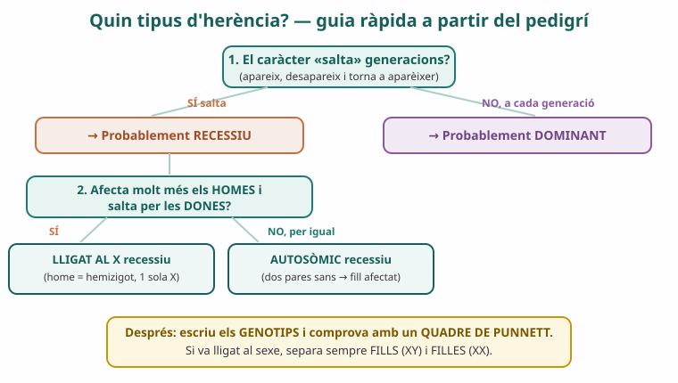

Fitxa editable. Clica per escriure. Passa el ratolí per una secció i prem ✕ per amagar-la. Ctrl+Z desfà.
✕
🧩
SA4 · Herència: el que passa de pares a fills · Sessió 5 de 5
Prova de problemes de genètica
Tancament de la SA4 · projecte Heredity ID
Biologia i Geologia · 4t ESO IE Temple
✕
Prova individual · sense ajuda · aplica el que has après a tota la SA4⏱️ 55 min
Nom: Data: B
✕
Què has de demostrar
Resolc problemes de dominància simple amb el quadre de Punnett i justifico amb els genotips.
Resolc un cas d'herència lligada al X separant fills i filles.
Aplico l'al·lelisme múltiple dels grups sanguinis (ABO) a un cas real.
Dedueixo, amb els passos guiats, quin tipus d'herència segueix un caràcter a partir d'un pedigrí.
✕
🧭 Recordatori — mètode per resoldre
1) Escriu la notació dels al·lels. 2) Dedueix el genotip de cada progenitor a partir del que et diuen. 3) Escriu els gàmetes i omple el quadre de Punnett. 4) Llegeix els fenotips i les proporcions. Si el caràcter va lligat al sexe, separa sempre fills (XY) i filles (XX).
1
Pelatge felí
Dominància simple · quadre de Punnett
En una raça de gats, el pelatge negre el determina l'al·lel dominant B i el pelatge blanc l'al·lel recessiu b. Un mascle negre ve d'una línia on tots els avantpassats coneguts han estat negres durant tres generacions. S'encreua amb una femella negra que és filla d'una mare blanca i d'un pare negre.
a) Escriu el genotip més probable de cada progenitor i justifica'l breument.
Pista: un gat blanc només pot ser bb; una femella negra filla de mare blanca (bb) ha rebut una b d'ella; el mascle, de línia sempre negra, el prendrem com a BB.
b) Fes el quadre de Punnett d'aquest encreuament:
♂ \ ♀
c) Hi ha probabilitat que neixi alguna cria blanca? Justifica-ho amb els genotips.
2
La família hemofílica del Martí
Herència lligada al X · separa fills i filles
L'hemofília és una malaltia de la coagulació causada per un al·lel recessiu lligat al cromosoma X. Anomenem XH l'al·lel normal i Xh l'al·lel hemofílic. Del Martí (10 anys) sabem: l'avi matern era hemofílic; l'àvia materna tenia coagulació normal i sense casos a la seva família; la mare del Martí té coagulació normal; el pare és sa; i el Martí neix hemofílic.
a) Quin genotip ha de tenir la mare del Martí? Explica per què és segur (no només probable): pensa quin al·lel li va donar per força l'avi hemofílic i com el Martí ha arribat a ser hemofílic.
b) Fes el quadre de Punnett del creuament mare (XH Xh) × pare sa (XH Y):
♀ \ ♂
XH
Y
XH
Xh
c) Indica les proporcions, separant fills i filles: quants fills (XY) poden ser hemofílics? i quantes filles (XX) poden ser afectades o portadores?
3
Qui és el pare?
Grups sanguinis ABO · al·lelisme múltiple
El grup sanguini ABO el determinen tres al·lels: IA (grup A), IB (grup B) i i (grup O). IA i IB són codominants entre ells i tots dos dominen sobre i. La mare, la Laura, és del grup A. El nadó, l'Èric, és del grup O. Hi ha dos possibles pares: en Pau (grup AB) i en Jordi (grup B).
a) Escriu tots els genotips possibles de la Laura (grup A) i de l'Èric (grup O).
b) Pot ser en Pau (AB) el pare biològic de l'Èric (O)? Fes el Punnett Laura (IA i) × Pau (IA IB) i justifica.
♀ \ ♂
IA
IB
c) Podria ser en Jordi (B) el pare? En quin cas (quin genotip de Jordi) seria possible un fill de grup O? Explica-ho amb un Punnett.
♀ \ ♂
4
Quin tipus d'herència?
Deducció a partir d'un pedigrí · passos guiats

En una família, un caràcter (una malaltia rara) apareix així: apareix tant en homes com en dones; dos pares que no la tenen tenen una filla afectada; i el caràcter salta la generació dels pares.
✕
🧭 Segueix aquests passos
1) Salta generacions? → si sí, sospita de recessiu. 2) Afecta per igual homes i dones o molt més els homes? → si per igual, sospita d'autosòmic (no lligat al sexe). 3) Dos pares sans amb una filla afectada → confirma recessiu (i, com que és una NENA afectada de pare sa, descarta lligat al X recessiu).
a) Marca SI o NO per a cada model i escriu una justificació breu:
Model d'herència
Possible?
Per què
Autosòmic recessiu
☐ SÍ ☐ NO
Autosòmic dominant
☐ SÍ ☐ NO
Lligat al X recessiu
☐ SÍ ☐ NO
b) Escriu la teva hipòtesi final: quin és el tipus d'herència més probable? Usa el vocabulari (gen, al·lel, genotip, fenotip).
✕
Metacognició — tancament SA4
Al principi de la SA4, sabies llegir un pedigrí o predir amb un quadre de Punnett? Què entens ara de l'herència que abans et semblava casualitat? Quin dels quatre problemes t'ha costat més i per què?
Adaptat per Albert Pahissa de l'original de Jordi Domènech. Llicència CC BY-NC-SA 4.0 (Reconeixement–NoComercial–CompartirIgual).